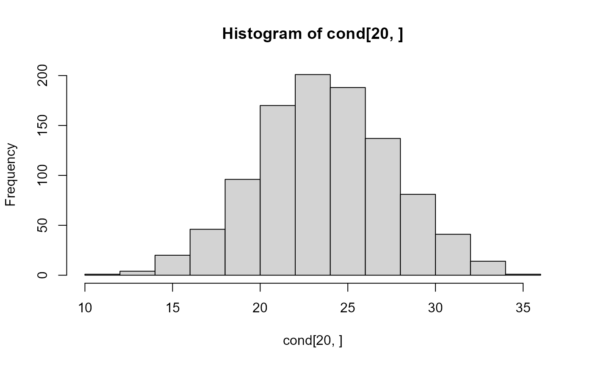

Conditionally simulate prediction data from a model object.
conditional(object, ...)
# S3 method for class 'splm'
conditional(
object,
newdata,
output = "newdata",
samples = 1000,
simulate_covparams = FALSE,
...
)
# S3 method for class 'spglm'
conditional(
object,
newdata,
output = "newdata",
type = c("link", "response", "new"),
samples = 1000,
newdata_size,
...
)A fitted model object.
Other arguments. Not used (needed for generic consistency).
A data frame or sf object in which to
look for variables with which to predict. If a data frame, newdata
must contain all variables used by formula(object) and all variables
representing coordinates. If an sf object, newdata must contain
all variables used by formula(object) and coordinates are obtained
from the geometry of newdata. If omitted, missing data from the
fitted model object are used.
The output type, which can be any subset of
c("newdata", "beta", "object"). If simulate_covparams = TRUE,
the output type can also be any subset of c("cov", "spcov", "randcov").
The default is "newdata". See Details for more.
The number of conditional simulations. The default is
1,000.
For splm() model objects, whether to also
simulate new covariance parameters for each sample. simulate_covparams
requires object$vcov$cov to be specified during model fitting by
selecting ddf = "satterthwaite". simulate_covparams = TRUE
should generally not be used for sample sizes greater than 500
given its computational inefficiencies. The default is
FALSE.
For spglm() model objects, the scale of the conditional
simulations for newdata.
When type = "link", the predicted means on the
link scale are returned. When type = "response", the predicted means
on the response scale are returned. When type = "new", a new observation
is simulated from the appropriate response distribution with mean equal to
the mean on the response scale and dispersion equal to the dispersion parameter
from object. The default is "link".
The size value for each observation in newdata
used when predicting for the binomial family, with a default value of 1.
If output = "newdata", an a x b matrix of conditional simulations
for each row in newdata, where a is the
number of rows in newdata and b is the number of samples.
If output = "beta", an p x b matrix of conditional simulations for each
element in coef(object), where p is the
number of fixed effects and b is the number of samples.
If output = "object", an n x b matrix of observed data values, where n is the
number of rows in data and b is the number of samples.
If output = "cov"/"spcov"/"randcov"
(simulate_covparams = TRUE only), a (covariance parameter) x b
matrix of the of conditoinal simulations for each covariance parameter, where b is the
number of samples. "cov" returns every covariance parameter,
while "spcov"/"randcov" return just the spatial/random-effect
covariance parameters, respectively.
If output has more than one element, a list is returned with the
respetive elements named according to the relevant output. For example
output = c("newdata", "beta") returns a list with elements
"newdata" and "beta", each containing the relevant output
for output = "newdata" and output = "beta", respectively.
If "newdata" is in output,
conditional simulations are returned for each row of newdata.
If "beta" is in output,
conditional simulations are returned for each fixed effect
(i.e., element of coef(object). If "object" is in output,
the observed data from object is returned once for each row of
newdata. For example, c("newdata", "beta") returns
the conditional simulations both for newdata and for the
fixed effects. If "cov"/"spcov"/"randcov" is in
output (only available when simulate_covparams = TRUE),
the simulated covariance parameter draws themselves are returned.
set.seed(0)
spmod <- splm(sulfate ~ 1, data = sulfate, spcov_type = "exponential")
cond <- conditional(spmod, newdata = sulfate_preds)
predict(spmod, sulfate_preds[20, ], se.fit = TRUE)
#> $fit
#> 1
#> 23.61902
#>
#> $se.fit
#> 1
#> 3.866808
#>
c("fit_cond" = mean(cond[20, ]), "se.fit_cond" = sd(cond[20, ]))
#> fit_cond se.fit_cond
#> 23.683964 3.907746
hist(cond[20, ])
